A proof-of-concept study in display-time image watermarking.
Draft · work in progress
Human Note
Glimpse-o-Matic started out as a pure JavaScript project, written by me (Joseph N. Hall), with the intent of eventually
incorporating Rust/WASM spread spectrum watermarking (as has now been done), but I worked on it only occasionally and it
never really went anywhere.
Then one day I decided I needed to learn to code like the cool kids, so I fired up Claude in VS Code. The rest is, um,
history?
100% of the Rust in the project and, now, the majority of the JS in the project, was written by Claude. Also, the rest of
this white paper, such as it is, was written by Claude. Some browbeating was required to persuade Claude (the Fable 5 model
in particular) to write in an "anodyne, formal" style, and it still hasn't, really. But the prose is readable, and "Claude's" ability
to explain certain concepts is, um, impressive? Well, at least, I think so. I've learned a bit in the process.
I think the future is going to be good product managers/systems engineers/UI designers patiently describing what they want
built to entities like Claude. I'm okay with that. I had a good run. (And I'm okay at all three of those roles.)
And so now, I'm handing you off to the AI author, whose prose is still a little florid, but "who" has done a quite decent job
explaining what we built. (Also I may ask Claude to fix the straight quotes in here.)
Overview
Glimpse-o-Matic is a photo-gallery web application with one unusual property: every image it displays is watermarked at the moment of display, in the viewer's own browser, with an invisible mark identifying the source of that particular copy.
If a screenshot or download later appears where it should not, the mark can be read back from the stray copy — with no original to compare against — and traced.
Everything else about the system serves zero-friction viewing.
A gallery is a static bundle — an HTML page, a WebAssembly module, and a packaged archive of photographs — served from ordinary static hosting; there is no account, no login, and nothing to install.
The browser streams the archive, decodes the photographs, embeds the mark, and renders the result, and only watermarked pixels are ever exported: the download button itself produces a marked copy, and the un-watermarked original never leaves as a file.
The paper is organized around those two halves.
The first is the watermark — how it is embedded, what it carries, how it is recovered blind, and where its measured limits lie — with the signal-processing ideas it rests on developed in self-contained sidebars where each first arises.
The second is the application that carries it: the architecture, the viewer, packaging and deployment, the forensic tooling, and the infrastructure planned next.
First, however, the paper states what the system is — and is not — defending against.
Threat Model & Protection Philosophy
The adversary this system is designed against is the casual reproducer: the person who screenshots a displayed photograph, crops it, shrinks it to fit a chat window, re-saves it, and posts it somewhere — without permission, but also without any attempt to defeat a protection.
Nearly every stray copy of a photograph takes this path, and everything in the design is sized against it.
The governing principle might be called security by moderate inconvenience, and it is a deliberate trade along two axes: speed of the viewing experience against inconvenience to the copier.
Three layers each raise the cost of a clean, untraceable copy without walling anything off.
The archive's entries are obfuscated in transit (see Gallery Packaging & Obfuscation), so the browser's network tools do not yield a photograph directly.
Export is watermarked-only: the download button encodes the marked pixels, and no code path hands out the original.
And the display itself carries the forensic mark, so the universal fallback — the screenshot — produces a traceable copy.
A determined adversary is explicitly out of scope.
Someone who reads the application's source, sets breakpoints in the browser's debugger, and extracts pixels from memory can obtain un-watermarked data; someone who knows a mark is present can attack it with heavy blur, added noise, or extreme recompression.
The un-watermarked pixels necessarily exist in the browser, so no client-side scheme can defeat the first person, and robust watermarking in general does not survive the second indefinitely.
The design accepts both and optimizes neither against them — the effort spent instead goes to keeping the casual path traceable and the viewing experience fast.
The protection philosophy that follows is forensic deterrence rather than access control.
The system does not prevent copies; it makes copies attributable, and it makes the attribution durable against the handling a casual copy actually receives.
What a recovered mark can and cannot be taken to prove is treated in Limitations & Non-Goals.
The Watermark
Every image in a gallery is delivered to the viewer's browser, and at the moment it is displayed, the browser stamps it invisibly with a small message.
If a screenshot of that view later appears elsewhere, the stamp can be read back from the stray copy to determine where it came from.
That description contains three requirements, and they work against each other:
Invisible. These are photographs, presented as the photographer intended; a mark that degrades the picture defeats the purpose of showing it.
Durable. A shared copy is rarely pristine: it is screenshotted, cropped, shrunk to fit a chat window, re-saved as a JPEG, and passed through a social network's upload pipeline. The mark should survive casual handling by people who are not trying to remove anything.
Readable blind. When a suspect copy surfaces, only the copy is available — not the original it was cropped from, nor the amount it was resized. The mark should be recoverable from the stray image alone.
Each of the obvious approaches fails one of these.
A visible logo degrades the picture and is the first thing a crop removes; metadata (EXIF and its relatives) is stripped by the first screenshot; a message hidden in the lowest bits of pixel values is invisible but erased by the first lossy save.
What satisfies all three is a technique borrowed from radio engineering: spread-spectrum signaling.
Rather than placing the message somewhere in the image, where it would be either visible or easy to remove, spread-spectrum signaling distributes it everywhere, very faintly — a structured texture laid across millions of pixels, each nudged by an amount too small to see.
The decoder, knowing exactly which pattern to look for, sums the pattern's faint trace across the whole image, and the total stands clear of the photograph's own variation even though no single pixel does.
No pixel carries any particular part of the message; all of them together carry it many times over, and that redundancy is what survives cropping, shrinking, and recompression.
This section follows the mark through its life: how it is embedded in an image, what the 192-bit payload contains and how it protects itself against read errors, how a stray copy is registered — scale and crop offset recovered from the mark's own structure — and read, and where the measured limits lie.
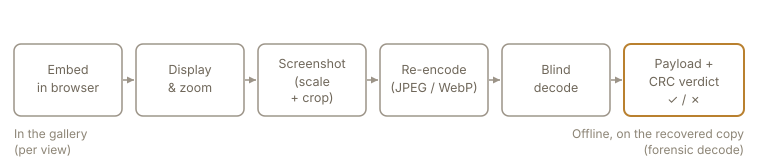
The pipeline.
The mark is embedded in the browser as each image is displayed. A viewer screenshots the view — resizing and cropping it — and re-saves it; later, the stray copy is decoded blind, with scale and crop recovered from the mark itself, into a 192-bit payload that the CRC either certifies or rejects.
ExplainerConvolution
A brief sound reveals how a room behaves.
A hand clap outdoors is heard as a short snap; the same clap inside a cathedral is followed by a second or more of reverberation as the sound returns from the walls.
The difference is a property of the room, not of the clap, and the room's answer to a single sharp sound — its impulse response — characterizes it.
The room treats every sound as it treats the clap.
A complex signal can be regarded as a dense sequence of brief impulses at varying levels; the room responds to each with the same reverberation, scaled to that instant's level, and the listener hears the sum of the overlapping responses.
This summation is convolution: the signal is convolved with the room's impulse response.
The description rests on two assumptions, and most physical systems satisfy both at least approximately: responses add, and the system behaves the same from one moment to the next.
Where both hold, the impulse response is a complete description of the system.
Convolution-reverb software depends on this: the measured impulse response of a concert hall, applied to any recording, reproduces the hall's acoustics.
An image is a two-dimensional signal, and the same concept applies to it.
See Explainer: Convolution: 2D.
ExplainerConvolution: 2D
An image is a signal in two dimensions — brightness as a function of position — and optical systems act on images as rooms act on sounds.
A photograph viewed through a sheet of translucent plastic arrives blurred, and a different photograph behind the same sheet is blurred in the same way: the blur is a property of the sheet.
It can be measured in isolation with the simplest possible input, a single point of light.
What comes through is a small smudge — the point-spread function — and it characterizes the sheet completely.
An image is an array of points at varying brightnesses; the sheet answers each with the same smudge, scaled to that point's brightness, and the overlapping smudges add.
The blurred result is the image convolved with the point-spread function.
Photographers encounter one point-spread function directly.
When a lens is defocused, every point of light in the background expands into a disc that takes the shape of the aperture — the polygonal highlights called bokeh are a lens's impulse response at visible size.
In computation the smudge becomes a small grid of numbers, a kernel, and the operation can be read in two equivalent ways.
In the scattering reading, each input pixel stamps the kernel into the output, scaled by its own brightness, and the stamps add.
In the gathering reading, each output pixel is a weighted average of its input neighborhood, with the weights given by the kernel.
The arithmetic is identical; only the point of view differs.
Familiar image filters are convolutions: a grid of equal weights blurs, a kernel that subtracts a pixel's neighbors from the pixel itself detects edges, and sharpening blends the two.
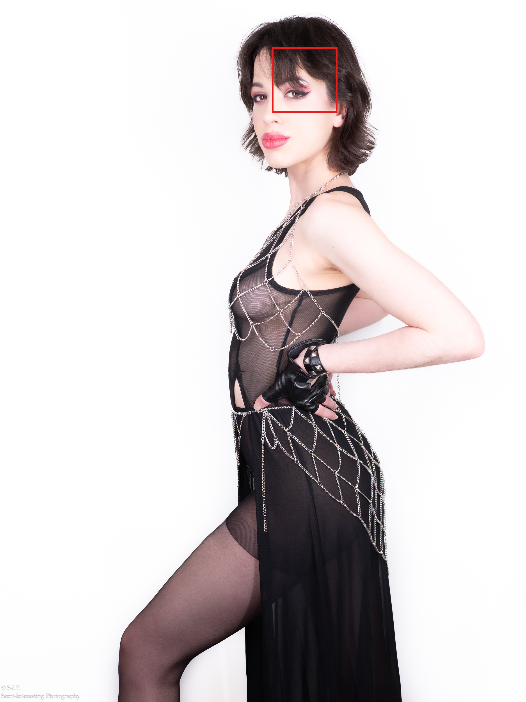
the detail region (an eye), shown at 1:1 below
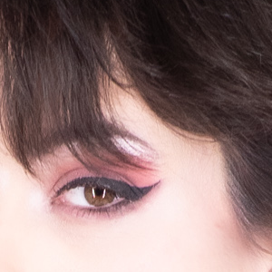
OriginalBox blurGaussian blur
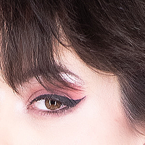
Sharpen
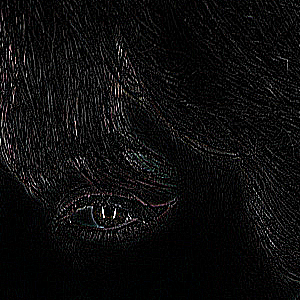
Edge detect
Four convolution kernels.
One detail region passed through four kernels.
The blur kernels replace each pixel with an average of its neighbors; the sharpen kernel amplifies each pixel's departure from that average; the edge-detect kernel keeps only the departure, so uniform regions go dark and boundaries remain.
The crops are shown at the image's true resolution; click any panel to magnify it 2×.
Much of the machinery in this paper is convolution in some form.
The watermark embedder stamps a faint pattern into an image — the scattering reading.
The decoder slides a known pattern across a suspect image and measures where it aligns — the gathering reading, used as a search.
The blurs, the resampling filters, and the wavelet transform's filters are the same operation throughout.
Embedding (Spread-Spectrum DWT)
Luminance.
A color image is, to the eye and to every image format, a brightness picture (luminance) with color overlaid (chrominance), and the mark is embedded in luminance only.
Durability is one reason: formats treat color as the expendable part — JPEG normally stores it at half resolution — so a mark hidden in color would be degraded first at every re-save, while brightness is preserved by every format, every screenshot, and even a black-and-white conversion.
Control is the other: working in one channel means the embedder makes one kind of change, whose visibility can be reasoned about and tuned.
Scale.
Within luminance, the nudges are placed by scale of detail, using the discrete wavelet transform (DWT) — a way of splitting an image into layers by scale, exactly reversible, so that altering one layer and rebuilding yields the original image plus an alteration at exactly that scale (developed in Explainer: DWT, below).
The threats sort themselves by scale.
JPEG compression discards the finest detail first, so a mark hidden in the top layer is erased by the first lossy save; the coarse layers hold most of the image's own energy, so changes there appear as visible blotches and shading shifts.
In between is a usable middle: detail at the scale of several pixels, fine enough that the eye reads it as texture, coarse enough that compression preserves it.
The mark is embedded in two adjacent mid-scale layers (levels 2 and 3 of the decomposition — structures roughly four and eight pixels across), in both the horizontal- and vertical-detail bands of each.
Spanning two layers is itself a form of redundancy: resizing shifts energy between adjacent scales, and a mark in both keeps a presence on whichever side the shift favors.
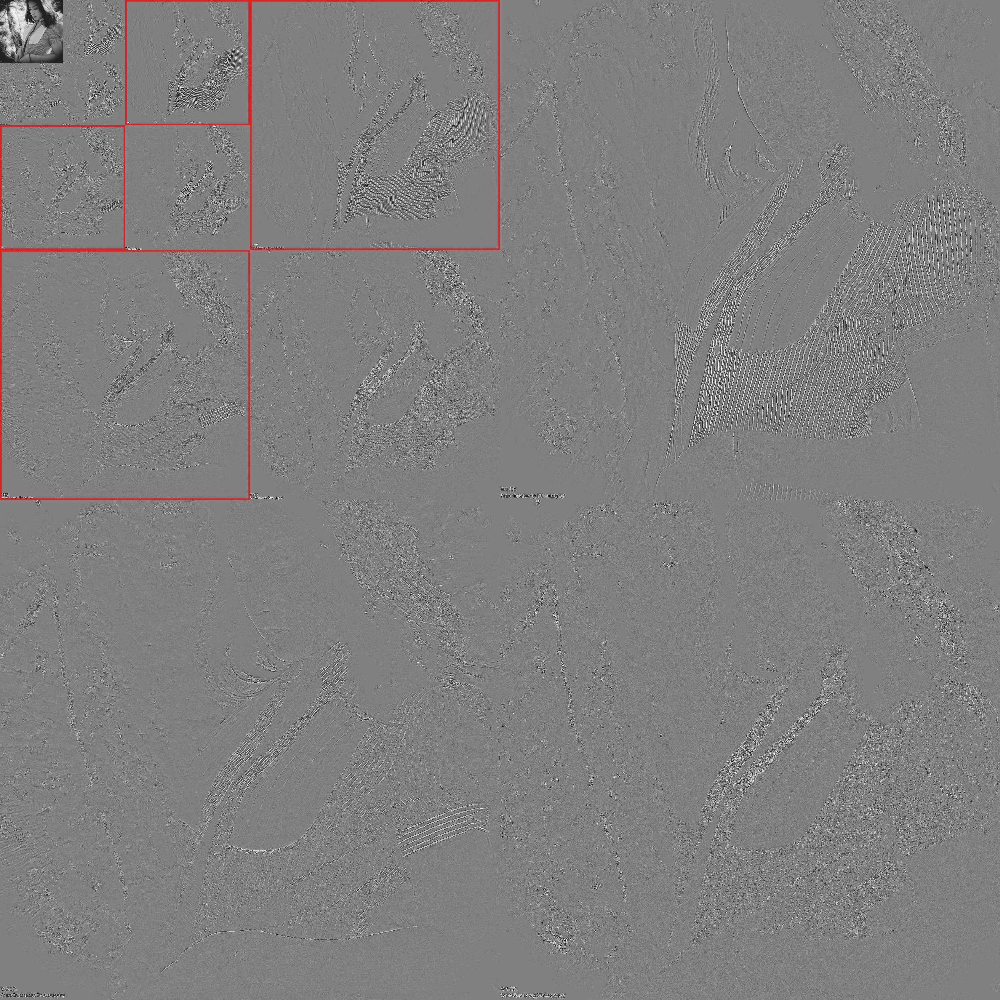
The wavelet decomposition.
The canonical fixture after the forward transform, each round splitting the image into a half-size coarse copy (upper left) and detail bands holding horizontal, vertical, and diagonal surprise at that scale.
The four bands the watermark uses — horizontal and vertical detail at levels 2 and 3 — are outlined.
Detail bands are amplified to about three standard deviations for visibility; in the original they are nearly black.
ExplainerDWT (Discrete Wavelet Transform)
A raw image file spends as many bits on a featureless sky as on an eyelash, yet most of an image is predictable from itself: a pixel almost always resembles its neighbors.
The informative part is the remainder — the departure of each pixel from what its surroundings predict.
The discrete wavelet transform is a representation that separates the predictable part from the departures.
The basic step is small.
Pixels are taken in pairs, and each pair is replaced by two numbers: its average, and its offset from that average.
The pair (9, 7) becomes average 8 and offset 1, and is recovered exactly as 8+1 and 8−1.
The averages form a half-size copy of the image; the offsets record the detail the half-size copy lacks.
The same step is applied to the half-size copy, and to its half in turn: each round yields a coarser image and another layer of detail at twice the preceding scale, until a thumbnail remains.
(The wavelets used in practice compute each detail value against a slightly wider neighborhood — a small kernel, in the sense of Explainer: Convolution: 2D — and operate along rows and then columns, so detail is also sorted by orientation; the pairwise arithmetic is the same computation in miniature.)
The transform is exactly invertible: no information is added or lost, only refiled as a thumbnail plus detail sorted by scale.
The ordering matches how images are read.
The thumbnail already conveys most of what the photograph is; each layer upward adds finer structure — features, then texture, then grain.
Equivalently, each detail layer is exactly what halving the image's size would discard.
no level 1no level 2no level 3
One layer at a time.
The same photograph rebuilt with a single detail layer removed.
Dropping level 1 erases the finest texture; deeper levels take progressively coarser structure.
Each layer holds exactly the detail at one scale — and the watermark lives in levels 2 and 3, fine enough to stay invisible, coarse enough to survive a re-save.
In this representation a photograph is mostly near-zeros: smooth and gently graded regions produce almost no detail, and the large values are confined to edges and textures.
If only the largest few percent of coefficients are kept, the rest set to zero, and the transform run backward, the photograph survives recognizably.
JPEG 2000, the successor to JPEG, builds its compression on exactly this property.
Original
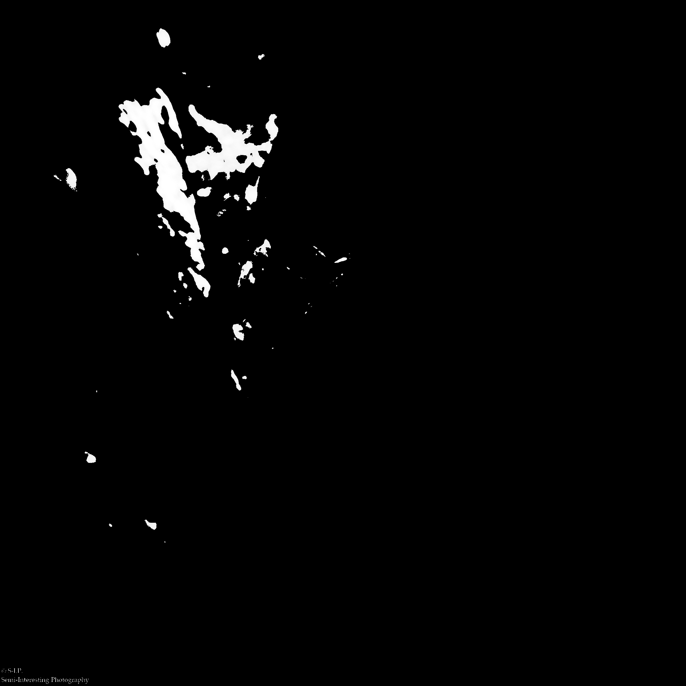
2% of pixels
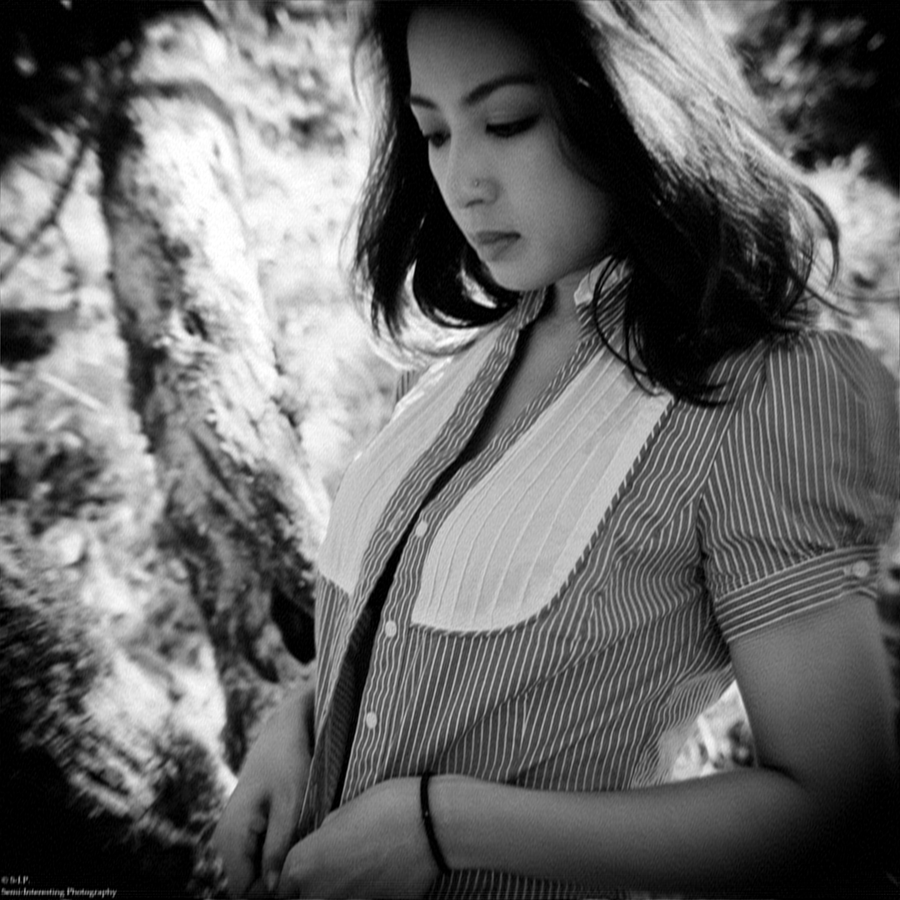
2% Fourier2% wavelet
Sparsity in three representations.
The same photograph rebuilt after keeping only its largest 2% of values in three representations.
As raw pixels the result is unrecognizable: every pixel matters equally, and discarding 98% leaves isolated specks.
In the Fourier basis the picture returns, but softened and ringing.
In the wavelet basis 2% of the coefficients reconstruct it almost perfectly — a photograph is sparse in wavelets, which suits the transform to both compression and watermarking.
Watermarking reads this ordering from both ends.
The coarse layers are the most important visually, so alterations there are the first to be seen; the finest layer is the least essential, and the first that recompression discards.
Between the two lies a band of scales coarse enough to survive a re-save and fine enough that a faint added pattern goes unnoticed.
The watermark is embedded in that band, and it was located by exactly this reasoning.
Readers who have seen a wavelet drawn — a brief, lopsided oscillation — may ask where that shape enters.
It is the procedure's impulse response: given a single 1 surrounded by zeros, the reconstruction step produces exactly that shape, and formally the transform represents the image as copies of it at every position and scale.
Nothing in this paper depends on the shape itself.
The keyed pattern.
What is added to those layers is pseudo-random noise (see Explainer: PN, below).
For each of the 192 payload bits, a 64×64 grid of +1s and −1s is generated from a secret key: statistically indistinguishable from coin flips, but exactly reproducible by anyone holding the key, and by no one else.
To embed a bit, its grid is added to the detail coefficients as-is (for a 1) or sign-flipped (for a 0); all 192 grids are summed and laid down together, so each coefficient receives a small, random-looking nudge.
The message is not in any coefficient; it is in the faint statistical lean of millions of them, and only the keyholder knows which lean to measure.
The same key that makes the mark recoverable keeps it private: without the patterns there is nothing to correlate against, and the mark is a small amount of extra grain.
One bit's tile
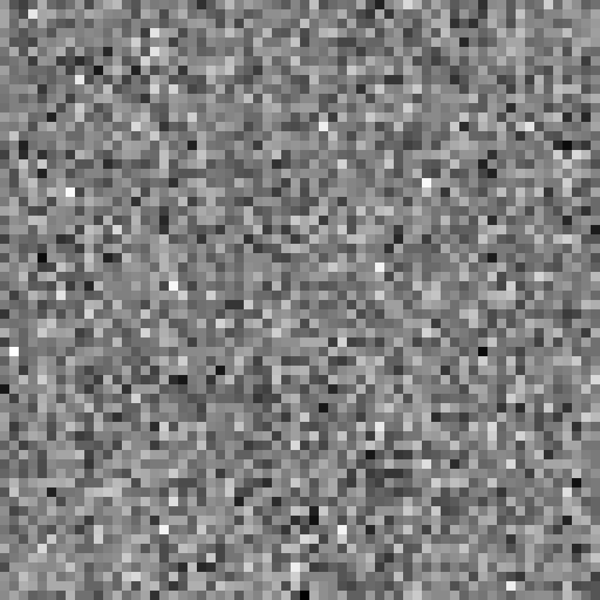
All 192 summed
The keyed pattern.
Left: the pseudo-random ±1 tile for a single payload bit.
Right: the sum of all 192 bits' tiles, which is what the embedder actually adds — scaled far down — to the detail coefficients.
Both are shown at full contrast; in the image itself the pattern is about a hundred times fainter.
This is the texture the decoder correlates against.
ExplainerPN (Pseudo-Noise) Patterns
The watermark is embedded as a repeating tile, and the tile must contain some pattern.
The pattern this system uses is a 64×64 patch of pseudo-random noise, and the choice answers three separate requirements.
Alignment.
A copy of a noise patch slid across itself agrees with the original essentially nowhere until the two reach exact register, where the agreement becomes total: a single sharp peak at zero offset and nothing elsewhere.
A striped pattern behaves in the opposite way — it matches at every stripe, and its alignment is ambiguous by construction.
For a decoder that must recover position precisely, a pattern that agrees with itself only in register is the ideal reference, and when the noise is tiled, the only matches anywhere are at exact multiples of the tile size.
The period the scale finder measures (Explainer: Autocorrelation) is unambiguous because the motif contributes no periods of its own; a logo or a grid would contribute several.
False alarms.
Photographs are full of regular structure — edges, gradients, fabrics, fences — and a striped mark would register a match against all of it.
A noise pattern essentially never occurs in nature, and natural content reads as approximately zero against it: in a correlation between a photograph and a noise patch, the photograph's own content averages away, leaving only whatever trace of the patch was planted.
Independent noise patterns also read as approximately zero against one another, so the 192 patterns this system generates — one per payload bit — coexist with little mutual interference.
Visibility.
Every photograph already contains grain from film or sensor noise, and the visual system treats a small addition of it as unremarkable.
Regularity is what the eye detects: an early version of this system stretched its tiles instead of repeating them, the pattern acquired a visible 39-pixel lattice, and the change was reverted.
Random texture at matched faintness is not seen.
The pseudo in pseudo-noise is what makes the choice practical.
True randomness cannot be regenerated; pseudo-noise is produced by a deterministic procedure from a seed — the key.
To anyone without the key it is statistically indistinguishable from coin flips; to the keyholder it is exactly reproducible.
GPS rests on the same arrangement: each satellite broadcasts its own PN code at a strength far below the noise floor, and a receiver that knows the codes correlates them out of apparent static, using the sharp alignment peak to time the signals.
A watermark decoder pulling a payload from a screenshotted, recompressed photograph performs the same operation.
That noise can carry a signal can also be demonstrated directly to the eye, in a construction due to Béla Julesz (Bell Labs, 1960).
Two copies are made of a field of random dots, and one small region is shifted slightly in one copy.
Each image alone is featureless static; viewed as a stereo pair, with the eyes fused on the two images, the shifted region appears at its own depth.
Neither image contains the shape — it exists only in the correlation between the two, and the viewer's visual cortex recovers it by matching dots between the eyes.
(The single-image "Magic Eye" posters of the 1990s are a descendant: a repeating noise strip whose period varies subtly, with the depths encoded in the variation.)
A marked photograph and a keyed reference pattern form the same arrangement: each alone is, or appears to be, noise, and the message exists only in their correlation.
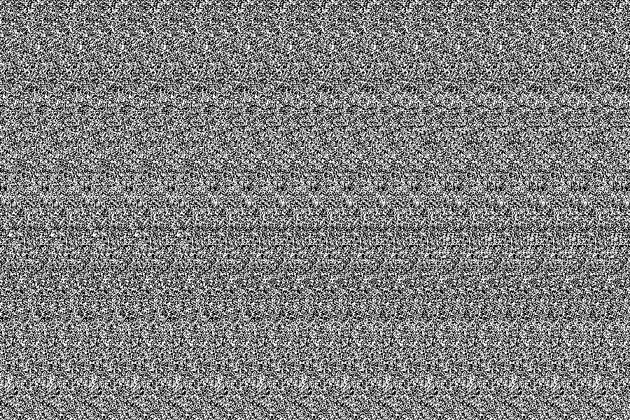
Noise carrying a signal.
A single-image random-dot stereogram. The picture is nothing but static, yet a shape is encoded in the spacing of its repeats. Relax the eyes as though looking through the page until the views fuse, and the shape appears at its own depth — recovered by the visual system's own correlation.
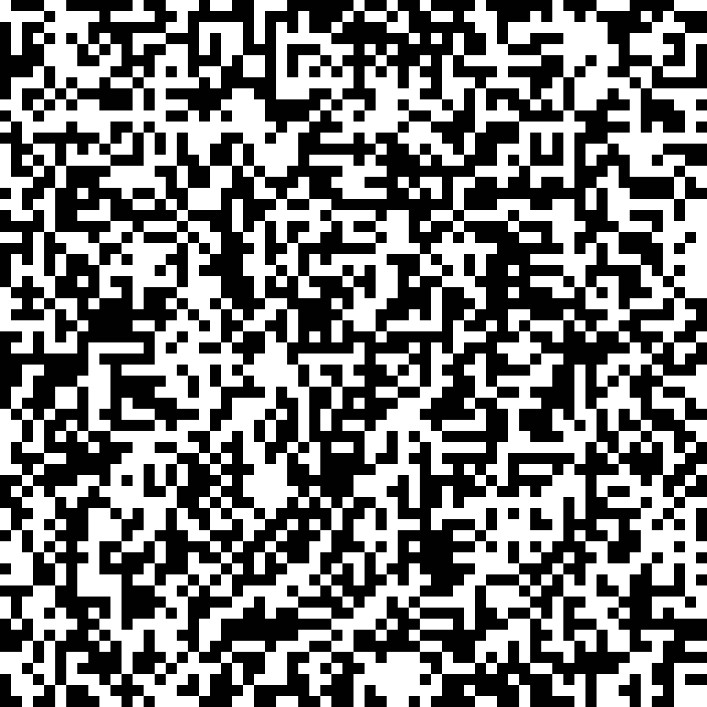
noise tile
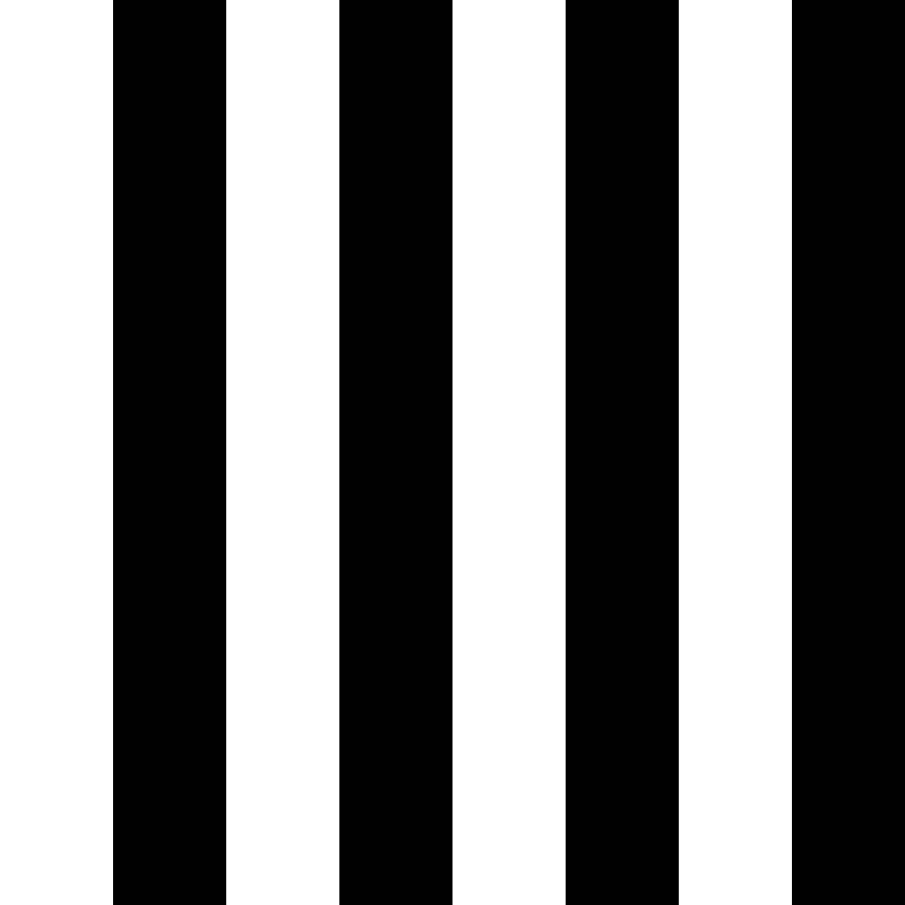
striped tile
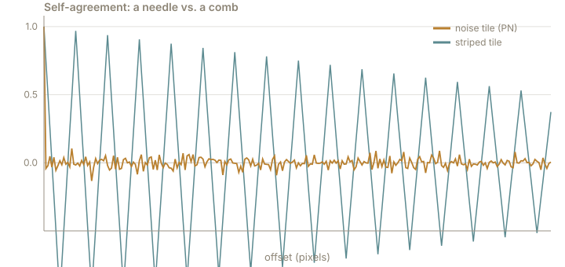
Noise versus stripes.
Each tile slid against itself. The noise tile agrees with itself only in exact register — a single sharp peak at zero offset and nothing elsewhere — which is what lets the decoder recover position. The striped tile agrees at every stripe, a row of equal peaks that leaves the alignment ambiguous.
Tiling.
The 64×64 grid is not stretched to cover the band — it repeats across it, edge to edge.
This is what makes the mark survive cropping.
Any patch of the image large enough to contain a few repeats contains, statistically, the entire message, and the decoder uses the repetition directly: it folds all the repeats back onto a single tile, so every surviving copy of the pattern adds its evidence.
Cropping costs only area — fewer repeats to average — never the message itself.
The repetition also gives the mark a regular spatial period, which later becomes the decoder's main clue for recovering an unknown scale (see Blind Recovery & Scale Search).
Strength.
A single global constant (α = 0.15, in the transform's coefficient units) sets how strongly every nudge is applied.
It was tuned empirically: reduced from clearly visible until the mark disappeared into the photograph, then checked against the decoder's ability to read it back through the capture chain.
A uniform strength is wasteful, however, because images are not uniform: in busy texture — foliage, fabric, hair — substantial nudges hide completely, while in a flat sky far smaller ones show.
The embedder therefore applies perceptual masking: it measures local detail energy across the band and modulates the strength accordingly, while holding the total embedded energy constant — the same signal power, spent where it costs the least visibility.
The blend is deliberately partial (a 50% lean toward the masked distribution): full masking concentrates so much energy at edges that it becomes a different visible artifact, the ringing familiar from over-compressed JPEGs.
The strength sweep.
One fixture embedded at three strengths.
At α = 0.03 (left) the mark is invisible but too faint to survive a realistic capture — through a half-size, lightly cropped, JPEG-saved channel it returns with 65 bit errors and fails.
At α = 0.15 (center), the production setting, it is still invisible and decodes cleanly with margin.
At α = 0.60 (right) it decodes easily but is visible as grain in the flat areas, the largest pixel change reaching 75 levels.
The bottom row shows each difference from the original amplified twentyfold.
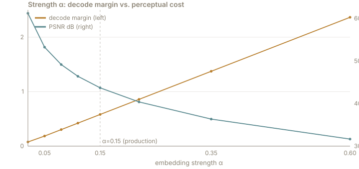
Why α = 0.15.
The same trade-off as a curve. As the strength α rises, the decode margin (amber) climbs and image quality (PSNR, teal) falls. Below roughly α = 0.08 a few payload bits read wrong even before any channel damage; by α = 0.15 every bit is correct with margin to spare, while the mark stays invisible; higher α buys more margin at a visible cost.
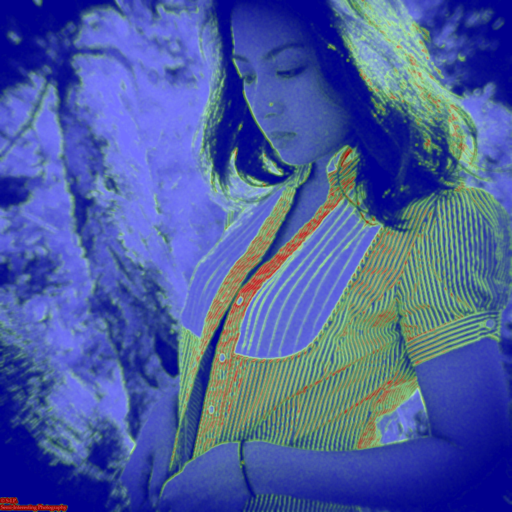
The masking gain.
Brightness encodes the local masking gain — high where the image is busy enough to hide a stronger mark, low in smooth regions.
The gain ranges from about 0.7 in the flats to 2.3 in texture, redistributing the mark's energy without changing its total.
Reconstruction.
The modified layers are inverse-transformed, the new luminance is written back beneath the untouched color, and the result is what the viewer sees and what every export contains.
The perceptual cost is small: a typical pixel moves by roughly one gray level out of 255, and even the most-changed pixels move by only a few.
Amplified twentyfold, the difference between original and marked image appears as a fine, slightly organic grain; at actual strength, we have not been able to find it by eye, even in side-by-side comparison and knowing where to look.
The grain's particular character is itself a design choice (see the aside below).
Original
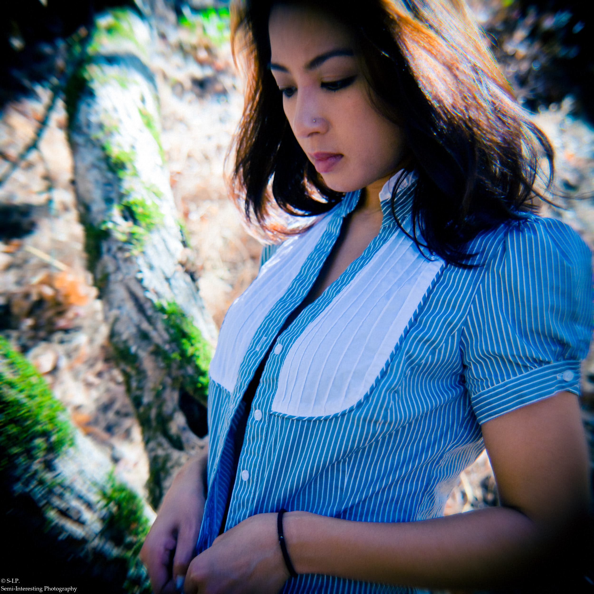
WatermarkedResidual ×20
Imperceptibility.
Original, watermarked, and the difference between them amplified twentyfold.
At the production strength the watermarked image is indistinguishable from the original (peak signal-to-noise ratio 43.7 dB); the mark becomes visible only in the exaggerated residual on the right.
The residual is amplified — the actual per-pixel change is about one part in 255.
Payload, CRC & Error Correction
The watermark carries a short message identifying the origin of this particular copy of the image — the kind of record a server keeps in a log: an IP address, a referrer URL, a user identifier, a date and time.
Which fields are present depends on when and where the mark is applied; for this section the message is opaque, and the machinery around it would be the same for any content.
That machinery is a fixed envelope of 192 bits.
The first 128 carry the message.
The next 32 are a CRC-32 checksum (see Explainer: CRC, below), computed over the message and appended to it.
The last 32 are error-correction parity — the BCH(192,160) code of Explainer: ECC (below), able to repair any four flipped bits anywhere in the envelope.
ExplainerCRC (Cyclic Redundancy Check)
When data travels, the receiver must decide whether what arrived is what was sent.
The data alone cannot settle the question — any string of bits is a plausible string of bits, and a damaged message does not look damaged.
If the receiver is to know, the sender must add something checkable.
The smallest such addition is parity: to any group of bits one more is added, chosen so that the count of 1s comes out even.
A receiver that counts an odd total knows some bit flipped in transit.
One extra bit detects any single error, though it cannot locate or repair it, and a pair of flips cancels and passes unnoticed.
A CRC extends the idea.
The message is run through a fixed division-like procedure and the 32-bit remainder is appended to it; the receiver runs the same procedure and compares remainders.
The procedure is designed so that the damage patterns common in practice — a single flip, a burst of consecutive garbled bits — always change the remainder, and even corruption with no structure at all reproduces the correct remainder by accident only once in 2³², about one in four billion.
A CRC repairs nothing; it renders a verdict, intact or damaged.
That is exactly what is wanted from the last step of a pipeline, because a verdict that almost never errs can be trusted to judge the output of riskier machinery upstream.
CRCs are correspondingly ubiquitous: zip archives, Ethernet packets, and most file formats carry one.
In this system the question is sharper than usual, because the decoder does not know whether a message is present at all.
The correlation machinery always returns 192 bits — presented with an unmarked photograph, it reads signs off the noise just the same — and the CRC is what distinguishes a reading from an artifact.
"Verified" in this paper means exactly one thing: the 128 recovered data bits, run through the same procedure, reproduce the 32-bit remainder embedded beside them.
The odds of noise managing that by accident are the one-in-four-billion figure above, which is why the CRC's word is final.
ExplainerECC (Error-Correcting Codes)
Over a sufficiently hard channel — a screenshot followed by recompression is one — bit errors are routine rather than exceptional.
Rather than demand perfect transmission, the sender can encode the data with redundancy, so that the receiver can reconstruct the original from a damaged copy.
A checksum (see Explainer: CRC) reports the damage; an error-correcting code repairs it, provided there is not too much of it.
The question is how the redundancy is best spent.
The brute-force approach sends the whole message three times and takes a majority vote.
Voting on whole copies fails on exactly the channels that justify the insurance — a message of any length will likely pick up some damage in every copy, so all three arrive different and there is no majority.
Voting bit by bit repairs this, since each position's two intact copies outvote its one damaged copy, but still costs two extra copies per message.
Real codes obtain the protection far more cheaply by sharing the redundancy: a few check bits jointly watch overlapping groups of message bits, and the pattern of which checks fail identifies the error.
The classic demonstration is the Hamming code.
Three overlapping circles form seven regions: four inner (three pairwise overlaps and the center) and three outer.
The four message bits are written into the inner regions, and each circle receives one parity bit in its outer region, chosen so that the circle's total count of 1s is even.
If any one of the seven bits flips, some set of circles becomes odd, and that set is an address: the center belongs to all three circles, each pairwise overlap to exactly two, and each outer region to one.
The odd circles name the flipped region, and flipping it back restores the message.
Seven bits are sent, four are delivered, and any single error is not merely detected but located.
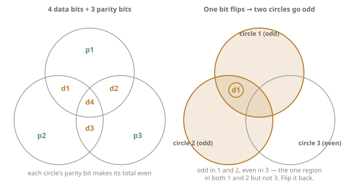
Hamming(7,4).
Four data bits sit in the overlaps of three circles, and each circle receives one parity bit that makes its own count of 1s even. A single flipped bit turns some set of circles odd, and that set is an address: here circles 1 and 2 are odd while circle 3 is even, which names the one region inside both 1 and 2 but not 3. Flipping it back restores the message.
Industrial codes — BCH, and the Reed–Solomon codes inside CDs and QR codes — are this idea scaled up: more check bits, overlapping in more elaborate patterns, locating several errors at once.
The decoder solves small polynomial equations whose roots are the error positions; this paper uses the mathematics by citation rather than derivation (see For Further Reading).
This system uses BCH(192,160): of the 192 bits embedded in an image, 160 carry the message and its CRC, and 32 are parity capable of locating and repairing any four flipped bits anywhere in the 192.
The budget of four was set by measurement.
At the edge of the watermark's survival envelope, read errors arrive gradually rather than all at once, and in our tests each additional lossy step — one more re-save, one more social-media transcode — cost roughly one more flipped bit.
A budget of four buys back approximately one full tier of degradation.
One caution applies: a code that can repair four errors can be misled by more — given five or six flips, it may confidently "repair" its way to the wrong message.
Correction is therefore never the last word.
A clean read skips correction entirely; if the CRC fails, the ECC attempts a repair; and the repaired result is accepted only if the CRC then passes.
Versioning.
A deployment's needs shift over time — new fields, a different way of identifying a viewer — so the message begins with a small version number, and the envelope as a whole is treated as one frozen generation of the format.
The decoder tries each generation it knows in turn, accepting the first whose checksum verifies.
Today there is one generation; the structure means that images marked under an old format keep decoding after a new one is introduced, and that changing the fields is a change only at the point where the message is built.
Resolution order.
Reading the mark back yields 192 raw bits, some possibly flipped by the capture chain, and they are resolved in a fixed order.
The checksum is tested first; a clean read — the common case — is accepted at once, with no correction.
If it fails, the error-correcting code attempts a repair, accepted only if the checksum then verifies.
If the four-bit budget is not enough, a last-resort soft-decision pass takes over: the reader has kept each bit's confidence (the size of its correlation, in the sense of Explainer: Correlation & Processing Gain), so it lists the dozen least-certain bits and tries flipping small combinations of them, running each candidate through the corrector and the checksum until one verifies or the attempts run out.
Throughout, only the checksum can accept a result: a clean read's checksum makes a false accept a one-in-four-billion event, and even the soft-decision pass, which may try a few thousand candidates, keeps it below one in a million.
Blind Recovery & Scale Search
The watermark is read by the same correlation that embedded it (see Explainer: Correlation & Processing Gain, below): the decoder sums each keyed pattern across the image and reads the bit from the sign of the total.
That works only when the pattern and the image line up pixel for pixel.
The mark lives in a wavelet transform computed on a fixed grid of pixels; resizing the image moves that grid, the pattern no longer lands where the decoder looks for it, and the correlation sums to noise.
A screenshot almost never lines up, so before anything can be read, two unknowns must be recovered from the stray copy alone: how much it was scaled, and by what offset it was cropped.
ExplainerCorrelation & Processing Gain
The watermark nudges each pixel by about one gray level; the photograph underneath varies by hundreds.
Position by position, the mark is roughly a hundred times weaker than the image that contains it — fainter than the sensor grain — and the system rests on the fact that it can nevertheless be read back reliably.
Recovery is possible because the decoder knows exactly what was planted, at every position.
Rather than search for the pattern, it forms a sum over the whole image: wherever the planted pattern was +1, that position's value is added to a running total; wherever it was −1, it is subtracted.
The planted nudges land on the agreeing side every time, so a million positions contribute a million small pushes, all aligned.
The photograph's own content has no relationship to the pattern, so at each position it is as likely to add as to cancel; a million such coin flips wander, on net, only about a thousand steps from zero.
This imbalance is called processing gain.
The aligned signal grows in proportion to N, the number of positions; the unaligned clutter grows only as √N; the signal's advantage therefore grows as √N as well.
With a million positions, √N is a thousand, and a pattern one hundred times fainter than the photograph emerges from the sum ten times above the noise floor.
The same law lets astrophotographers stack hundreds of exposures until a nebula invisible in any single frame appears — the object adds coherently while the sensor noise random-walks — and lets GPS receivers recover satellite codes from far beneath the static (see Explainer: PN).
The decoder is ultimately a list of such correlations.
Each of the 192 payload bits has its own planted pattern and its own sum; the sign of each total is the bit's value, and its magnitude is a confidence the decoder reports.
Evaluated at every possible offset at once — the gathering form of Explainer: Convolution: 2D — the same arithmetic also locates the pattern, which is how the crop offset is recovered.
The sums align, however, only if the pattern and the image sit on the same pixel grid, which after an unknown resize they do not.
Restoring that grid is the registration problem — the subject of this section.
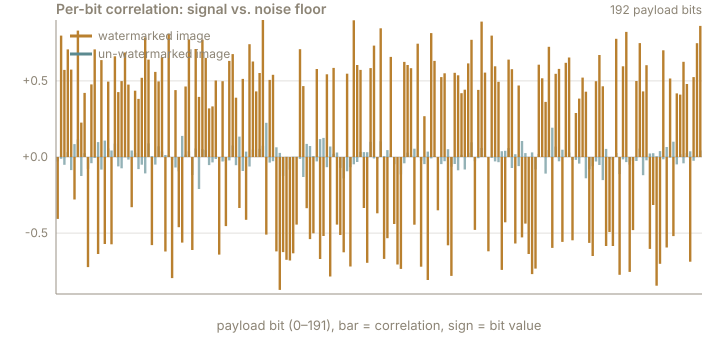
Signal over the noise floor.
Each of the 192 payload bits, correlated across the whole image. In the watermarked image (amber) every bit stands well clear of zero, and the sign of each bar is the bit's value; in an un-watermarked image (teal) the same measurement stays near zero. Measured here, the watermarked correlations average about eleven times the noise floor, and all 192 signs are correct.
Scale, then offset.
Scale is recovered first, by the unkeyed method of Explainer: Autocorrelation (below): the mark repeats with a known period, so the suspect's autocorrelation peaks at whatever that period has become, and the ratio to the original gives the scale.
With a scale in hand, the decoder resamples the suspect back to the original size, folds every repeat of the tile onto a single one so that their evidence adds, and runs the keyed correlation against that one tile.
The correlation peak serves twice: its location is the crop offset, and the signs read at it are the payload.
The unkeyed finder proposes a scale; the keyed reader confirms it by decoding, with the checksum as the final word.
ExplainerAutocorrelation
A suspect image has usually been resized somewhere between the gallery and its discovery — shrunk to fit a chat window, or enlarged by a zoomed-in screenshot — by an unknown factor.
The watermark can be read only once the image is returned to its original size, so the factor must be measured from the suspect itself.
The mark's construction makes this possible: it is embedded as a repeating tile with a period of 256 pixels at original size.
Resizing changes the period in proportion — 128 pixels at half size, 384 at 150% — so the period measured in the suspect, divided by 256, gives the resize factor.
The difficulty is that the tile is invisible and cannot be searched for directly: rendering the reference pattern at the correct size would require the very factor being sought.
Autocorrelation avoids the circularity.
It detects that a signal repeats, and measures the period, without any knowledge of what repeats: a copy of the signal is slid across the original, and their agreement is measured at every offset.
Agreement is total at zero offset, falls to nearly zero as the copy slides away, and returns when the offset reaches one full period, where the pattern again lands on itself.
Plotted against offset, the agreement shows a peak at each multiple of the period.
The technique is common.
A guitar tuner finds pitch this way: a vibrating string's signal agrees with itself when shifted by exactly one cycle, so its autocorrelation peaks at the period.
Tempo detection finds the beat the same way, and the autocorrelation of a photograph of a brick wall peaks at the brick spacing without any model of a brick.
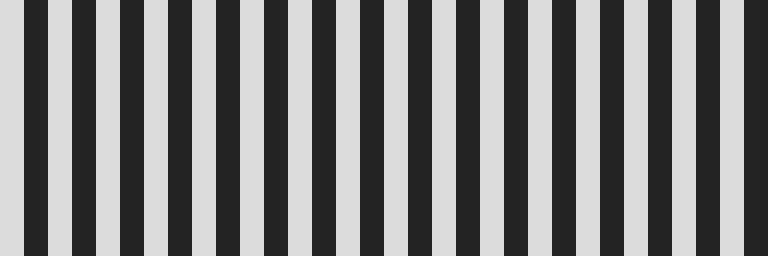
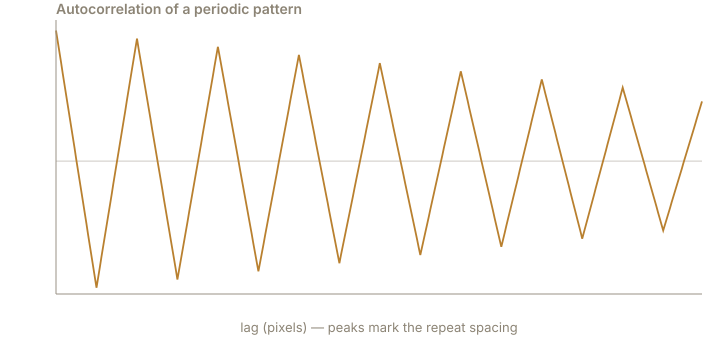
Measuring a period.
A repeating pattern — here a synthetic picket fence — slid against itself agrees strongly each time it advances by one period, producing peaks at multiples of the spacing. The spacing is read directly from the peaks, with no knowledge of what the pattern is.
In this system, autocorrelation is the first step of blind recovery: the suspect is autocorrelated, the tile's peak is located, and the resize factor is read from its position.
A mark repeating every 154 pixels indicates a scale of 0.60, and the decoder then knows what size to restore the image to.
The result is only a proposal — the verdict belongs to the keyed correlation and the CRC that follow — and the measurement requires care, because the watermark's periodicity is faint against the photograph's own structure.
In one case the peak fell near the edge of the measurable range and was nearly missed; that account appears below.
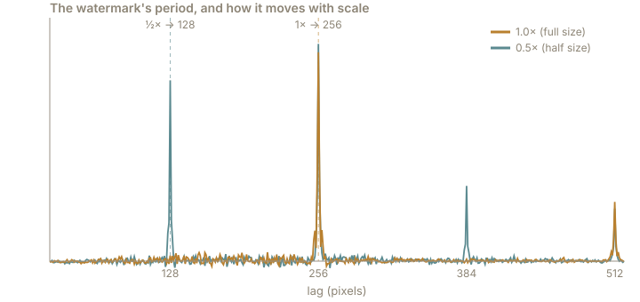
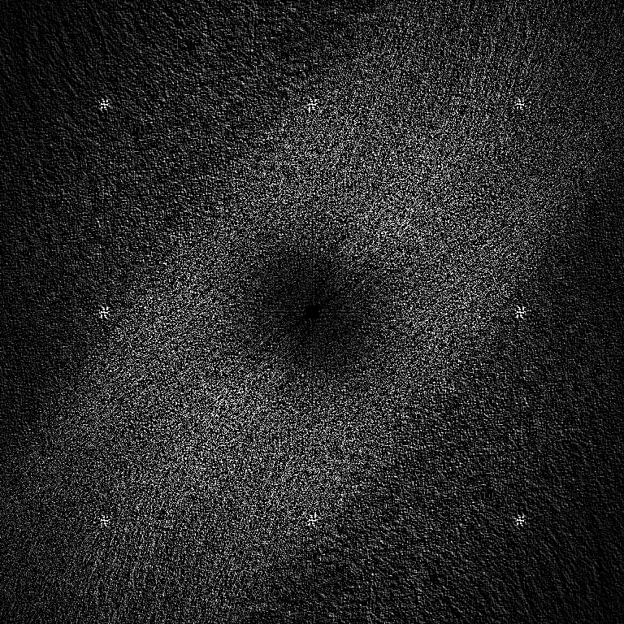
The watermark's period, and the scale it reveals.
Top: the watermark's autocorrelation. At full size it peaks at lag 256, the tile period; halving the image moves the peak to 128, which is how the decoder reads the scale. (The fainter peaks are harmonics of the two-level mark.)
Bottom: the full two-dimensional autocorrelation, in which the repeating tile appears as a regular lattice of peaks.
Harmonics.
Shrinking an image blurs it, and blurring weakens the finest scale of the mark first, so in a downscaled suspect the strongest peak is often not the true tile period but a harmonic of it — a confident peak at twice the true spacing.
The decoder accommodates this: each period the finder reports is expanded into a small family — the period, its half, and its third — and every member is tried, strongest first, until one decodes and verifies.
Because the tiling is self-similar, a harmonic decodes correctly; it is simply another route in.
A planned post-MVP experiment attacks the ambiguity at its source: the current tile periods are powers of two, each an exact octave of the next, so every peak has plausible siblings.
Overlaying a few tilings of relatively prime periods at roughly the same scale would remove the ambiguity by construction — a set of coprime periods can agree on only one scale — though whether the change also gains or costs signal-to-noise remains to be measured.
Upscaled captures.
Zoomed-in screenshots, in which the suspect is larger than the embedded scale, defeated the decoder for a time: downscaled crops decoded and upscaled ones failed, and it was not obvious why.
A test that bypassed the scale finder and tried every scale by brute force settled the question — every failing capture decoded perfectly at its true size, so the finder, not the signal, was failing.
The cause lies in the autocorrelation: its peak sits at a frequency inversely proportional to the period, so enlargement pushes the peak toward the lowest frequencies, among the image's own broad gradients, where the finder's whitening step (see Explainer: Whitening, below) flattens it away as content.
The fix is to shrink the suspect first: a reduced copy moves the buried peak back into the clean mid-range, revealing candidate scales the full-resolution pass misses, while the decode itself still runs at full resolution.
The search works down a small pyramid of reductions, trying the full image first and descending only when nothing verifies.
ExplainerWhitening
The scale finder of Explainer: Autocorrelation must measure a faint periodicity — the watermark's — inside a signal dominated by the photograph carrying it.
In the frequency domain, where the measurement is actually made, the tiled mark concentrates into a narrow spectral peak at a frequency inversely proportional to its period.
The difficulty is the background: photographs concentrate their energy in broad, smooth variation, and their spectra fall steeply from the lowest frequencies upward, so the watermark's peak sits partway down an enormous slope.
Measured raw, the tallest features of the spectrum are the photograph's, and the peak of interest is nowhere near the top.
Whitening levels the ground.
The spectrum is divided, frequency by frequency, by a smoothed copy of itself, so that every value is expressed relative to its own local average.
Broad trends — the photograph's bulk — divide out to roughly one, while anything narrow and concentrated, such as a periodic pattern's peak, stands above its now-flat surroundings.
The name describes the result: a spectrum flattened this way resembles that of white noise, in which every frequency carries equal energy.
Readers who have met whitening as a data-preprocessing step in machine learning have met this operation: dividing each frequency by its local average is the same variance-equalizing step, carried out in the basis that diagonalizes a stationary signal.
The operation has a familiar relative in photo editing.
Unsharp masking subtracts a blurred copy of an image from the image itself, boosting fine detail relative to broad shading — a fixed, one-shot version of the same rebalancing.
Whitening is the adaptive extreme: every frequency is rebalanced against its own neighborhood, and a whitened photograph, viewed as an image, looks like the "clarity" slider pushed to its limit — edges and texture with the smooth shading stripped away.
Whitening has one blind region, and it is the one that matters to this system.
Near the lowest frequencies, the smoothing window that estimates the local average is inflated by the image's bulk next door, and the division flattens the watermark's peak along with everything else.
A peak that drifts into that region is not merely hard to see; the very step that reveals it elsewhere erases it.
Enlarging an image pushes the peak exactly there — the period grows, the frequency falls — which is why upscaled captures once defeated the scale finder, and why the pyramid remedy of the preceding paragraphs works: shrinking the suspect returns the peak to the clean middle of the spectrum.
TBD — figures (TODO-WP15): a photograph beside its whitened version; the lag profile of a marked capture with and without whitening; the upscale failure and its pyramid recovery, with the measured peak rankings.
Refinements and cost.
A few smaller measures sharpen the result.
The autocorrelation peak is interpolated to a fraction of a pixel, because a quarter-percent error in scale is enough to decorrelate the fold; candidates are ranked by prominence — how far the winning peak stands above the typical one — so the most promising scale is tried first; and bounds on plausible source sizes prune absurd candidates.
The common case, a clean or lightly handled capture, verifies on the first candidate in about three seconds; only genuinely hard captures walk the whole pyramid and the soft-decision pass, and those can take the better part of a minute.
The recurring pattern in this system's failures is the one the upscaled case showed: the finding of the mark gives out before the mark itself does.
Exactly where each gives out is the subject of Robustness & Limits.
Robustness & Limits
Everything below concerns one question: can the payload be read back?
What the payload says does not enter into it — the data could be anything and the measurements would be identical.
The numbers come from a standing test that drives the production decoder, unmodified, through a matrix of realistic captures: embed, display at some scale, crop as a screenshot would, re-save, and decode blind.
The envelope.
Across that matrix the decoder recovers the payload from 52 of 53 captures: through ordinary JPEG saves, downscaling to roughly a third of the original size, enlargement past 1.5×, crops that remove hundreds of pixels from every edge, and combinations of all three — and, in a separate real-world test, through a round-trip that included a social network's WebP transcode.
The table below is a representative slice.
"Clean" means the checksum verified on the first read with no correction; "ECC" means the error-correcting code repaired that many bits; "Chase" means the soft-decision pass was needed; prominence measures how decisively the scale was found (higher is a cleaner lock).
image
save
scale
crop
prom.
recovered?
quyen
none
1.00×
none
8.4
clean
quyen
JPEG q85
1.00×
none
7.5
clean
zia
JPEG q80
0.75×
none
9.4
clean
quyen
JPEG q85
1.50×
none
7.7
clean
quyen
JPEG q90
1.00×
130/200 px
5.8
clean
collibrina
JPEG q85
0.66×
60 px/edge
6.0
clean
quyen
JPEG q90
0.37×
none
4.0
ECC ×3
collibrina
JPEG q90
0.50×
none
3.5
ECC ×3 (harmonic)
riley
JPEG q70
0.70×
200 px/edge
4.4
ECC ×2
riley
JPEG q50
0.60×
none
2.0
Chase + ECC ×4
quyen
JPEG q50
0.60×
200 px/edge
2.5
not recovered
quyen
WebP
1.00×
none
—
not yet tested
A representative slice of the blind-decode sweep (the full matrix runs 53 captures, 52 recovered).
The single failure is the corner case below; WebP saves are a known gap in the synthetic sweep, covered for now only by the real-world capture mentioned above.
Limits of the signal.
Held at perfect registration — decoding at the known size, so the only damage is compression — read errors accumulate gradually.
A full-size image survives JPEG quality settings far below anything a casual save would use; the first bit flips only in the single digits of quality, well within the four-bit correction budget.
Downscaling steepens the curve: a half-size image accumulates errors faster as quality drops, and where heavy downscale and aggressive recompression combine, the errors jump past four in a single step and the correction is overrun.
The soft-decision pass extends this edge slightly; the one capture the sweep fails to recover sits just beyond it.
scale
JPEG quality
raw bit errors
recovered?
1.00×
90
0
clean
1.00×
40
0
clean
1.00×
20
1
ECC ×1
1.00×
15
2
ECC ×2
1.00×
10
4
ECC ×4
0.50×
90
0
clean
0.50×
80
1
ECC ×1
0.50×
70
4
ECC ×4
0.50×
60
5
overrun
0.50×
50
5
overrun
The quality waterfall (one fixture, decoded at the known size so registration is exact and the only damage is compression).
Raw errors are the flipped bits before correction; the four-bit budget covers a full-size image down to extreme quality, but a half-size image overruns it once both stresses combine.
Limits of the search.
The other limit is the size of the source, and here the bottleneck is the one the previous section named: finding the mark, not reading it.
Given the correct size, the payload still reads when the source has been resampled to 512 pixels on its long edge; blind recovery, which must discover that size unaided, becomes intermittent below about 1024 pixels, succeeding at some sizes and missing at others as the scale finder locks onto the wrong harmonic.
Both numbers are soft — a detailed photograph and a smooth one sit at slightly different floors — so the boundary is a band rather than a line.
Speed.
Decoding is a forensic step, run rarely and offline, so its cost is secondary.
A typical capture decodes in about three seconds; the hardest, which exhaust the scale pyramid and the soft-decision search before they verify, can take the better part of a minute.
These are the limits of recoverability under ordinary handling.
What the scheme deliberately does and does not defend against — and what a recovered mark can and cannot be taken to prove — is a separate question, taken up in Limitations & Non-Goals.
Application Architecture
The application is a single page with no framework: a thin JavaScript layer and a Rust core (glimr) compiled to WebAssembly.
Where each piece of work lives was settled by a working rule: code moves to Rust when it runs faster there, or when it keeps un-watermarked data out of easy reach of the browser's developer tools; it stays in JavaScript when it is orchestration — events, gestures, animation timing — that would be more code in Rust for no gain.
The resulting boundary is simple to state: JavaScript owns the DOM, input, and interface; Rust owns pixels — archive parsing, obfuscation decode, watermark embedding, rendering, and caching.
JavaScript ↔ Rust / WASM Division
The rule's most consequential application was image decoding.
JPEG decode began inside WebAssembly with a pure-Rust decoder at roughly 790 ms per image; enabling WASM SIMD halved that; handing the job to the browser's own codec (createImageBitmap) brought it to 5–30 ms per image, decoded concurrently.
The browser codec won decisively, and the decode is now hybrid: JavaScript asks the browser to decode, then passes the raw pixels into WebAssembly memory, where the watermark is applied and they remain.
The cost of that speed is a bounded exposure: un-watermarked pixels transit JavaScript momentarily on their way into WASM memory, reachable by someone who has read the source and set a breakpoint.
That sits exactly at the "studied the code first" bar the threat model accepts, so it is a deliberate trade rather than a gap.
The trigger to revisit it — a decoder inside WebAssembly, paying the speed back for a harder wall — is the point at which a recovered mark maps to a named viewer (see Future Infrastructure), when the un-watermarked original becomes worth more effort to protect.
The migration stopped where the rule said to stop.
Pointer and gesture handling, zoom and pan geometry, and the animation loops remain in JavaScript: every per-frame cost already lands in Rust through the draw calls, so porting the orchestration would add code and move no work.
Streaming Zip Loader
A gallery archive is a zip file, and the loader consumes it as it arrives rather than after it downloads.
A small state machine inside the WASM module walks the stream — entry header, filename, data, repeat — decompressing each entry and reversing its obfuscation the moment its bytes are complete.
The first photograph is decoded and on screen while the rest of the archive is still in flight, thumbnails populate as entries land, and a floating progress bar tracks bytes received.
The same pump serves both a network fetch and a local file, which simply resolves instantly.
Streaming is the only path; there is no buffer-it-all fallback.
Archives that cannot be parsed in stream order — deferred sizes, zip64, encryption — are rejected with an explicit error, a restriction with little practical cost: the common zip writers, and packg itself, all produce compatible archives.
Rendering Pipeline & Image Caching
Drawing runs through three canvases: a hidden decode canvas holding one image at native resolution, an off-screen backing canvas where each frame is composed, and the visible photo canvas that receives the finished frame in one blit.
The compose-then-blit arrangement exists to prevent flicker during slide animations and is kept deliberately.
Watermarking is done just in time.
Embedding a six-megapixel image costs 100–500 ms on the main thread, so the application marks the displayed image and its immediate neighbors during the viewer's natural pauses rather than grinding through the whole gallery — a policy that scales to galleries of 50–100 images.
Results are kept in two caches.
The pixel cache holds full-resolution watermarked pixels under a 250 MB budget, evicting the image farthest from the one being viewed; an evicted image costs one re-decode and re-mark if revisited.
A second, screen-size scroll cache keeps a pre-scaled copy of each image at display resolution, built once and blitted per frame — the change that cut per-frame drawing from roughly 25 ms to 12 ms and made swiping smooth.
It is flushed whenever the display geometry changes.
The Viewer UI
The interface is a full-bleed image with a thumbnail carousel beside it — a strip across the top in portrait, a column down the left in landscape, swapping automatically with orientation.
The carousel scrolls by drag with momentum, can be caught mid-flight with a tap, and keeps the active thumbnail in view as the viewer navigates.
Two faint logo marks also overlay the viewing pane; they are interface elements rather than part of the image — present in a screenshot of the viewer, absent from a download — and are unrelated to the forensic mark.
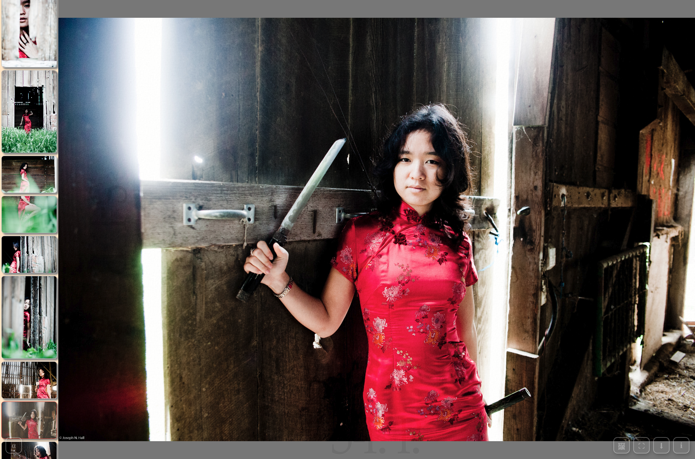
The viewer.
A gallery in landscape: the thumbnail carousel runs down the left with the active image outlined, the action buttons sit at bottom right, and the faint logo overlays are visible against the pane.
The photograph on screen was watermarked at the moment it was displayed.
Navigation divides the image into thirds.
Tapping the left or right third moves to the previous or next photograph with a slide animation; a drag past a quarter of the width does the same.
Tapping the center enters zoom mode at 1:1 pixel scale, as do the scroll wheel, a pinch, and keyboard steps — each zooming toward the cursor, pinch midpoint, or screen center respectively — and zooming continues past 1:1 to a 2:1 maximum.
All of them exit automatically on returning to fit scale, and in zoom mode, dragging and the arrow keys pan.
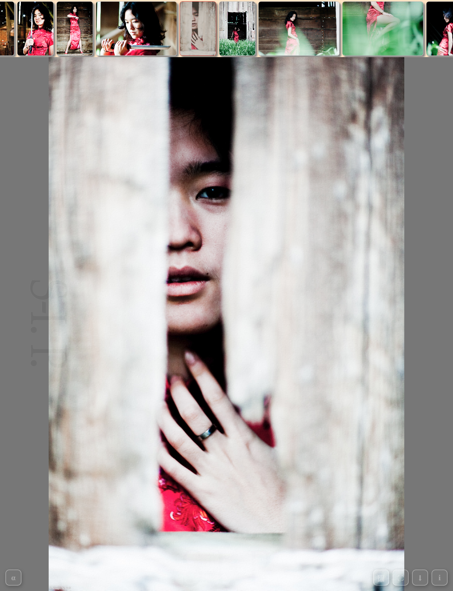
portrait
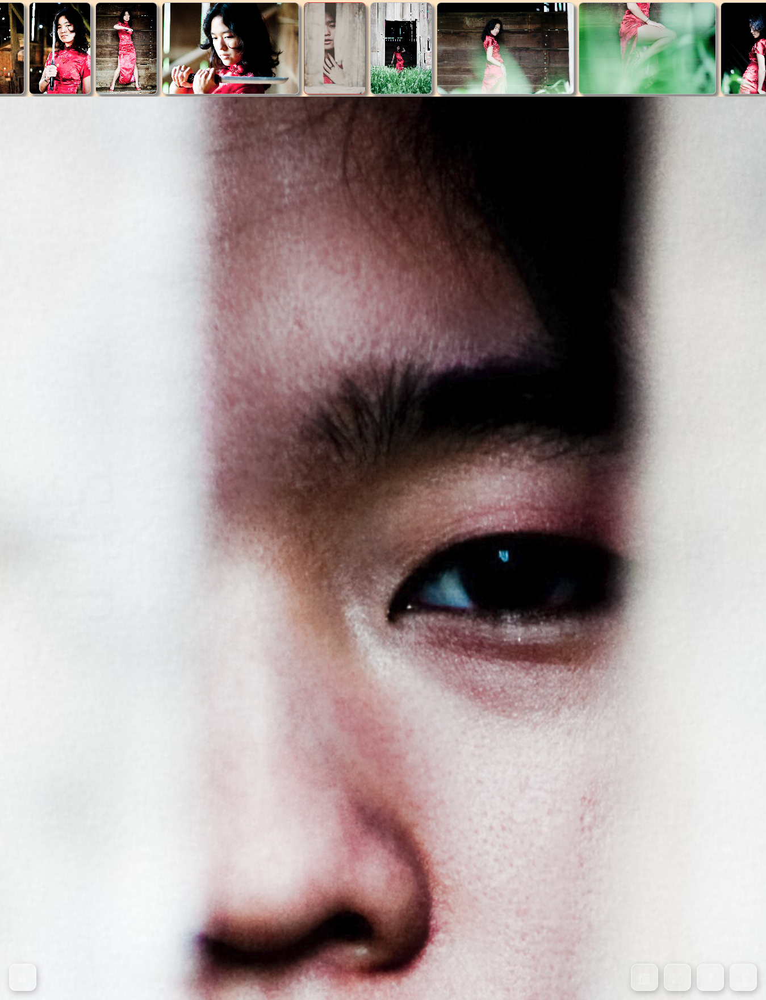
zoomed to 2:1
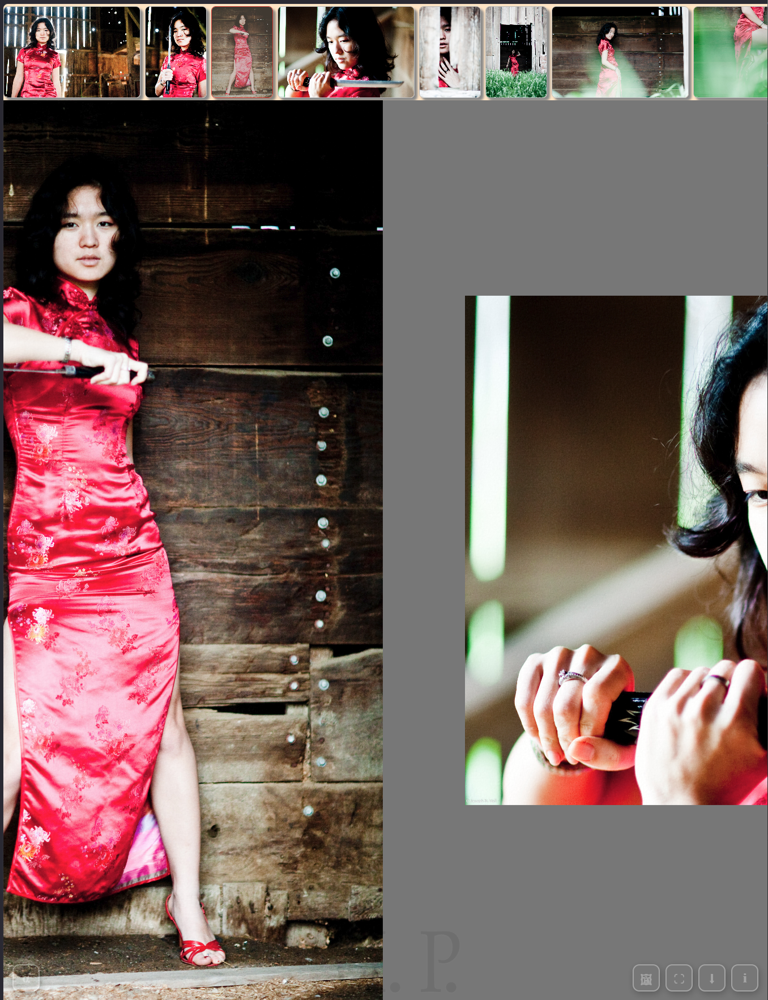
mid-slide
Orientation, zoom, and navigation.
Left: the same gallery in portrait, the carousel now across the top.
Center: zoom mode at its 2:1 maximum, panned to a detail.
Right: a slide navigation caught mid-animation, the incoming photograph entering from the right.
The portrait capture, run through the blind decoder exactly as committed here, verifies — see Forensic Decode & Client Attribution.
A row of floating buttons carries the remaining functions: load an archive from disk, toggle fullscreen, download, and an info overlay with the image's name and dimensions; an about overlay, populated from a per-gallery HTML file, sits in the opposite corner.
The download deserves its one sentence of emphasis: it encodes the watermarked pixels to a high-quality JPEG in the browser, and it is the only export the application has.
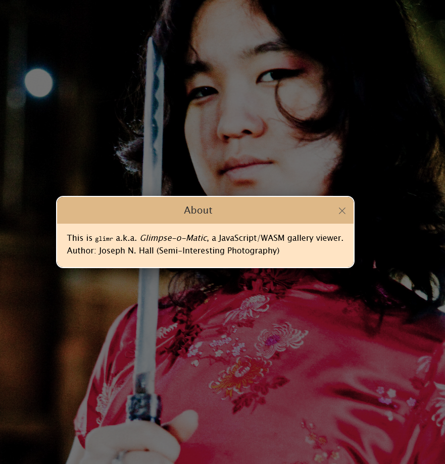
The about overlay.
Populated from the gallery's own HTML file; the info overlay shares the styling.
Gallery Packaging & Obfuscation
A gallery is prepared by packg, which takes a directory of JPEGs and produces a single zip archive.
Each file is encoded with a fixed four-byte XOR key and renamed to an eight-character hash with a .dat extension; the hash names sort into the intended display order, and the viewer presents entries in archive order.
The WASM module reverses the encoding as entries stream in.
The encoding is obfuscation, and the design is candid about the difference.
XOR with a compiled-in key stops the casual paths — fetching an image by URL, saving it from the network inspector — from yielding a photograph; it does not resist anyone who reads the source, which is within the accepted bar of the threat model.
The actual protection does not live here: pixels leave the application only watermarked, whatever happens to the archive.
A planned refinement generates a random key per gallery and bakes it into that gallery's WASM build, so that unpacking one gallery teaches nothing about another.
Two reserved names, social_preview.jpg and social_preview.txt, are stored first in the archive and un-encoded; the viewer skips them, and Social Preview explains what they are for.
The viewer also accepts a plain, unobfuscated zip of ordinary images, which keeps testing and casual use simple.
Build & Deploy Tooling
Three command-line tools and a build script surround the viewer.
The build script compiles the Rust core to WebAssembly, builds the tools, and stamps a build marker into the HTML to defeat stale browser caches.
packg is described in Gallery Packaging; the forensic decoder in Forensic Decode.
deployg publishes a gallery — the viewer files plus its archive — either to a local directory or directly to Cloudflare R2 through the S3-compatible API, with request signing implemented in the tool itself.
Each gallery lives under its own key prefix on the bucket, and therefore its own URL path; deploying onto an occupied prefix requires an explicit force flag and a confirmation, and a dry-run mode simulates the entire operation, reads included, without writing anything.
Deployment is also where per-gallery metadata enters the served HTML: deployg injects the gallery's Open Graph tags into a sentinel block at deploy time (see Social Preview), keeping one viewer codebase while every gallery presents itself individually.
Automated edge-cache purging is written but currently disabled pending an API-token scope; until it is enabled, a cache-disabled development URL and manual purges cover the gap.
Forensic Decode & Client Attribution
The reading end of the system is a command-line tool, watermark-decode, whose entire interface is a suspect image.
Blind recovery is the default and needs no flags: a fast path first attempts a matched decode at the image's native size and returns immediately if the checksum verifies (the case where the suspect was never resized), and otherwise the full search of Blind Recovery & Scale Search runs.
When the original dimensions happen to be known they can be supplied to skip the search, and a verbose mode narrates each candidate scale as it is tried.
The tool renders one of three verdicts.
Verified means the checksum passed: the payload is certain, to the one-in-four-billion standard of Explainer: CRC.
Likely means the keyed correlation locked with strong confidence but the payload would not verify — in effect, "this is probably your photograph, but the message is unreadable"; the search bounds are deliberately set to keep reporting this tier even below the size floor where full recovery becomes impossible.
Not detected means neither.
The middle tier earns its keep in practice: attribution intelligence short of a certified payload is still intelligence.
What a verified payload establishes is a record, not a proof: it names the serving that produced this copy — timestamp, source identifiers, whatever the generation's fields carry — and its evidentiary weight is that of a log entry that survived inside the image.
The distinction between that and cryptographic proof is drawn in Limitations & Non-Goals.
Real captures ground the machinery.
A 1.49×-zoomed, cropped, re-saved screenshot — found in the wild during development — decodes blind and verifies, the case that motivated the pyramid search.
A copy uploaded to a social network, transcoded to WebP by its pipeline, and downloaded again also verified, with the error correction absorbing three flipped bits; that capture's provenance is lost, so the paper reports it as experience rather than exhibit, and the standing sweep's WebP measurement stands in as the reproducible evidence.
One hard capture, decoded end to end.
The decoder's own narration of a real screenshot capture that exercises every stage this paper has described.
The native fast path fails; eight full-resolution scale candidates and eight more from the pyramid fail; the refinement ladder around the four most prominent candidates fails; and the soft-decision pass then retries the least-confident bits until the error correction and the checksum agree — four bits repaired, verified at confidence 2.3.
Note that the true scale, 1.000, was among the early candidates: the read at that scale carried five or more raw bit errors, too many for correction alone, and only the soft-decision retry brought it inside the four-bit budget.
This paper also demonstrates the machinery on itself.
The portrait screenshot in The Viewer UI is an ordinary, untouched capture of the viewer — the photograph displayed at fit scale, the carousel and interface chrome included in the frame.
The committed figure, fed to the decoder, verifies: the scale comes back as 0.496, the tile offset is recovered, the checksum passes at confidence 4.0, and the payload carries a timestamp from the viewing session in which the capture was made.
The interface chrome surrounding the photograph costs only signal area; unmarked content correlates to approximately nothing against the keyed patterns (see Explainer: PN).
TBD — figure (TODO-WP16): the sstest51 capture pair with decode verdicts and numbers. TBD — sweep numbers (TODO-WP17): synthetic WebP column to cite alongside the anecdote above.
Attribution today ends at the gallery and session; a planned tool, packclient, extends it to client deliverables — baking a distinct mark into each delivered set and keeping a manifest mapping payloads to clients, so that a leaked deliverable is attributable with the same decoder.
The identity infrastructure that would make per-viewer attribution routine is the subject of Future Infrastructure.
Social Preview (Open Graph)
When a gallery link is pasted into a chat or a social post, the receiving platform fetches the page and builds a preview card — and its crawler does not run JavaScript.
Whatever the preview should show must therefore be present in the served HTML as static metadata, and the preview image must be an ordinary, publicly fetchable file: crawlers do not open archives.
Both constraints are satisfied at deploy time. deployg uploads the gallery's preview image as a standalone object beside the archive and injects the Open Graph and Twitter tags into a sentinel block in that gallery's HTML, idempotently, so redeploys replace rather than accumulate.
The card itself — 1200×630, the large-preview size — is composed in a small browser tool: a background photograph placed and scaled, a logo, and a wrappable title, exported as a genuine JPEG.
Genuine matters: one platform (Signal) honors the declared content type and caps preview size, and a PNG renamed .jpg produced a bare link icon there before the tool was made to export real JPEG.
The pipeline was validated end to end on Bluesky and Signal.
Composing the card.
A background photograph placed and scaled, a logo chosen from the pool at top left, and the title box selected for editing, with justification, size, and typeface in the toolbar.
The download button exports the finished card as a genuine JPEG.
The card's design carries a deliberate inversion.
It is low-resolution, branded, and titled — so a copied preview is an advertisement, and re-posting the link works in the photographer's favor rather than against it.
The same card and title ride inside the archive under the reserved names of Gallery Packaging, available to a future splash screen.
The exported card.
1200×630, titled and branded — an advertisement wherever it travels.
The card in the wild.
As rendered by Bluesky from the deployed gallery's Open Graph tags (account details redacted).
The crawler fetched the tags and the standalone image from the gallery's prefix; no JavaScript ran.
Future Infrastructure
Static hosting remains the backbone; everything in this section is additive, planned for after the static MVP is feature-complete, and designed to be adopted incrementally.
The three pieces build on one another: a payload format that can evolve, a server that can say who a viewer is, and a log for a recovered payload to point into.
Payload Evolution & Generations
The embedded message will change as the system grows, and the format is structured so that change is cheap.
Two layers evolve at different rates.
The channel layer — envelope size, checksum, error-correction scheme, pattern count — is frozen per generation; the semantic layer — what the 128 data bits mean — is dispatched by a version number inside the message and can change freely.
The decoder holds an ordered list of the generations it knows, each self-checking, and accepts the first that verifies — the same first-verify-wins shape as the scale search.
Old images therefore keep decoding indefinitely, as long as their generation stays in the list, and capacity is deliberately decoupled from use: the data field is sized generously, unused bits ride as reserved zeros, and growing into them is a version change, not a format break.
Today there is one generation.
Server-Side Identity (Cloudflare Workers + D1)
Today's payload is self-reported: the client assembles its own timestamp, address, and fingerprint.
A small server layer changes what can be known and trusted.
A worker on the HTML entry point observes the request itself — connecting address, coarse geography, network, TLS fingerprint — none of which the client controls, and injects a compact token into the served page for the payload to carry.
Assets continue to serve statically; only the entry point runs code.
The payload then becomes an index plus a check: a short event identifier referencing a rich database record, a few coarse self-describing bits so a recovered image is partly legible without the database, and a server-computed truncated message-authentication code.
A MAC rather than a signature is a considered choice — a real signature is several times larger than the whole envelope, and with a single verifier there is no need for public verifiability; because verification is private, an attacker gets no oracle to test forgeries against, so even a short MAC is effectively unforgeable by a third party.
It would also subsume the CRC, detecting both damage and tampering, freeing those bits for more error correction.
Throughout, the database record is the authoritative account of the serving; the watermark corroborates it.
Access Logging & Analytics
Identity needs something to point into: an events table recording one row per visit or download — who was served which gallery, when, from where.
A scheduled rollup coarsens raw rows into per-viewer summaries on a fixed cadence and prunes the originals, so data minimization is built into the pipeline rather than remembered as a chore, with an optional cold archive for the long tail.
With the log in place, a recovered payload completes its sentence: this copy was served to this identity at this time — checked against a record the client never touched.
Limitations & Non-Goals
This system is forensic deterrence.
It does not prevent copies, does not manage rights, and does not encrypt anything of consequence; it makes the ordinary copy traceable and accepts everything that falls outside that sentence.
The specific boundaries are worth stating plainly.
A determined adversary wins.
Someone who knows the mark is there can attack it — heavy blur, deliberate noise, re-photographing a screen, cropping below the size floor, recompression past the measured cliff — and someone willing to study the application's source can extract un-watermarked pixels in the browser's debugger.
Both are outside the threat model by design, and no effort is spent pretending otherwise.
The mark's robustness is engineered against handling, not against attack.
The watermarking field's standard adversarial benchmark, StirMark, exercises exactly the attacks conceded here — small geometric distortions above all — and this system has not been run against it; readers who want the adversarial literature will find it in For Further Reading.
Recovery holds only inside the measured envelope.
The numbers of Robustness & Limits are the honest boundary: blind recovery becomes intermittent below roughly a thousand pixels of source, the combination of heavy downscale and aggressive recompression overruns the correction budget, and the boundaries are bands that shift with image content.
The registration search covers uniform scale and translation — the transformations casual handling actually applies.
Rotation, non-uniform stretching, and perspective are outside it: a rotated capture does not decode today.
Attribution is investigative, not evidentiary.
A verified payload proves that the copy descends from a particular serving of the image, to the checksum's near-certainty — but nothing in today's payload is cryptographically bound to anything.
The checksum guards against noise, not against tampering; a third party without the key cannot mint a valid mark, but the keyholder could, so a recovered payload is corroboration for the operator, not proof for a skeptic.
The planned message-authentication code (see Future Infrastructure) hardens third-party forgery but does not change the deeper fact: the operator holds the key, so this is not, and does not aim to be, legal non-repudiation.
Forgery resistance beyond that point is a non-goal.
Obfuscation is friction.
The archive encoding and the hidden canvases raise the effort of a clean copy from one click to an afternoon of reading source.
They are described honestly as inconvenience throughout this paper, and the system's real claims rest entirely on the watermark and its measurements.
For Further Reading
This paper teaches by intuition and uses the deeper mathematics by citation; this section is the citations.
It is an annotated shelf rather than a bibliography — grouped in the order the subjects appear, with a note on what each entry is good for.
Watermarking
I. Cox, J. Kilian, F. T. Leighton, and T. Shamoon, "Secure Spread Spectrum Watermarking for Multimedia," IEEE Transactions on Image Processing, 1997. The paper this system descends from: the argument that a robust mark must be faint, spread wide, and placed in the perceptually significant parts of the signal.
I. Cox, M. Miller, J. Bloom, J. Fridrich, and T. Kalker, Digital Watermarking and Steganography, 2nd ed., Morgan Kaufmann, 2008. The standard textbook; if one book, this one.
M. Barni, F. Bartolini, and A. Piva, "Improved Wavelet-Based Watermarking Through Pixel-Wise Masking," IEEE Transactions on Image Processing, 2001. The nearest published relative of this paper's embedder: wavelet detail bands plus perceptual masking.
M. Kutter, "Watermarking Resisting to Translation, Rotation, and Scaling," Proc. SPIE, 1998. The lineage of this paper's scale finder: recovering lost geometry from a mark laid down periodically.
Steganography and the wider field
G. J. Simmons, "The Prisoners' Problem and the Subliminal Channel," Advances in Cryptology (CRYPTO), 1983. The short classic that framed covert communication.
J. Fridrich, Steganography in Digital Media, Cambridge University Press, 2009. The modern standard. Steganography hides the fact that a message exists; watermarking assumes the adversary knows and asks the mark to survive — this paper sits in the second camp, borrowing the first's tools.
F. Petitcolas, R. Anderson, and M. Kuhn, "Information Hiding — A Survey," Proceedings of the IEEE, 1999. A map of the whole territory, both camps included.
Attacks and benchmarking
F. Petitcolas, R. Anderson, and M. Kuhn, "Attacks on Copyright Marking Systems," Information Hiding Workshop, 1998. The paper that introduced StirMark, the standard adversarial benchmark for watermarking; the maintained tool lives at petitcolas.net/watermarking/stirmark. Its signature attacks — small random geometric distortions — are exactly the transformations outside this system's registration search, and the system has not been tested against it (see Limitations & Non-Goals).
Spread spectrum and pseudo-noise
R. Pickholtz, D. Schilling, and L. Milstein, "Theory of Spread-Spectrum Communications — A Tutorial," IEEE Transactions on Communications, 1982. The canonical tutorial; the processing-gain arithmetic of this paper, done properly.
S. W. Golomb, Shift Register Sequences, 1967. The pseudo-noise urtext: where the sequences come from and why they correlate the way they do.
E. Kaplan and C. Hegarty, eds., Understanding GPS: Principles and Applications, Artech House. The applied companion to this paper's GPS examples — an industry built on correlating known noise out of static.
Wavelets and JPEG 2000
S. Mallat, "A Theory for Multiresolution Signal Decomposition: The Wavelet Representation," IEEE Transactions on Pattern Analysis and Machine Intelligence, 1989. The pyramid of Explainer: DWT, in its original form.
A. Cohen, I. Daubechies, and J.-C. Feauveau, "Biorthogonal Bases of Compactly Supported Wavelets," Communications on Pure and Applied Mathematics, 1992. Where this system's wavelet gets its name: CDF 5/3 is theirs.
I. Daubechies, Ten Lectures on Wavelets, SIAM, 1992. The deep end, honestly labeled.
A. Skodras, C. Christopoulos, and T. Ebrahimi, "The JPEG 2000 Still Image Compression Standard," IEEE Signal Processing Magazine, 2001. Closes the loop the DWT explainer opens: the same transform, used for compression.
Detection, correlation, and whitening
G. Turin, "An Introduction to Matched Filters," IRE Transactions on Information Theory, 1960. The theory beneath Explainer: Correlation — including the whitened matched filter, this paper's whitening in its native habitat.
D. Field, "Relations Between the Statistics of Natural Images and the Response Properties of Cortical Cells," Journal of the Optical Society of America A, 1987. Established the 1/f spectral fall-off of natural images — the thing whitening exists to flatten.
"PCA Whitening," in the Stanford UFLDL Tutorial, ufldl.stanford.edu/tutorial/unsupervised/PCAWhitening. The same operation as taught in machine learning, in covariance language; for a stationary signal the Fourier basis diagonalizes the covariance, making this paper's spectral whitening the special case with the eigenbasis known in advance.
Error control
R. W. Hamming, "Error Detecting and Error Correcting Codes," Bell System Technical Journal, 1950. The origin, and still a pleasure to read; the three-circle figure of Explainer: ECC is his construction.
D. Chase, "A Class of Algorithms for Decoding Block Codes with Channel Measurement Information," IEEE Transactions on Information Theory, 1972. The "Chase" in this paper's robustness tables: soft-decision decoding by retrying the least-confident bits.
S. Lin and D. Costello, Error Control Coding, 2nd ed., 2004. The textbook; BCH codes done properly, Galois fields included.
P. Koopman, CRC Polynomial Selection, users.ece.cmu.edu/~koopman/crc. The practical modern reference on choosing and trusting CRCs.
Stereograms and the visual system
B. Julesz, "Binocular Depth Perception of Computer-Generated Patterns," Bell System Technical Journal, 1960. The random-dot stereogram's debut — the demonstration in Explainer: PN that a message can live entirely in the correlation between two fields of noise.
C. Tyler and M. Clarke, "The Autostereogram," Proc. SPIE, 1990. The single-image form: the ancestor of this paper's stereogram figure, and of the bookstore posters.
General signal processing
S. W. Smith, The Scientist and Engineer's Guide to Digital Signal Processing, free at dspguide.com. Convolution, correlation, filters, and transforms at exactly this paper's level of prose — arguably the most useful single entry here.


Social Preview (Open Graph)
When a gallery link is pasted into a chat or a social post, the receiving platform fetches the page and builds a preview card — and its crawler does not run JavaScript. Whatever the preview should show must therefore be present in the served HTML as static metadata, and the preview image must be an ordinary, publicly fetchable file: crawlers do not open archives. Both constraints are satisfied at deploy time.
deployguploads the gallery's preview image as a standalone object beside the archive and injects the Open Graph and Twitter tags into a sentinel block in that gallery's HTML, idempotently, so redeploys replace rather than accumulate.The card itself — 1200×630, the large-preview size — is composed in a small browser tool: a background photograph placed and scaled, a logo, and a wrappable title, exported as a genuine JPEG. Genuine matters: one platform (Signal) honors the declared content type and caps preview size, and a PNG renamed
.jpgproduced a bare link icon there before the tool was made to export real JPEG. The pipeline was validated end to end on Bluesky and Signal.The card's design carries a deliberate inversion. It is low-resolution, branded, and titled — so a copied preview is an advertisement, and re-posting the link works in the photographer's favor rather than against it. The same card and title ride inside the archive under the reserved names of Gallery Packaging, available to a future splash screen.